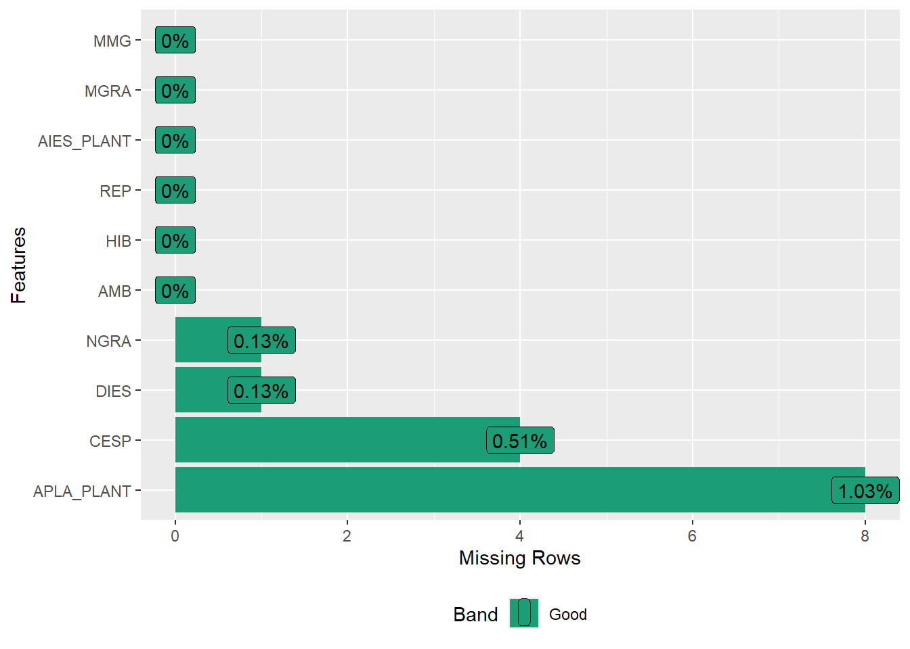

# meu computador (mudar de acordo)
setwd("D:/Desktop/UFSC/aulas/classes/RGV410046/data")7. Sintetização
Diretório
Pacotes e dados
library(rio)
library(tidyverse)
library(metan)
library(DataExplorer)
# dados
maize <-
import("examples_data.xlsx",
sheet = "maize",
setclass = "tbl")Sintetização
Após a organização e mutação dos dados, o cientista precisa resumi-los utilizando alguma métrica de interesse. A média, a mediana, a variância, a frequência, a proporção, por exemplo, são tipos de sumarização que trazem diferentes informações sobre uma variável. No R, a função summarise() cria um novo data frame. Ele terá uma (ou mais) linhas para cada combinação de variáveis de agrupamento; se não houver variáveis de agrupamento, a saída terá uma única linha resumindo todas as observações na entrada. Ele conterá uma coluna para cada variável de agrupamento e uma coluna para cada uma das estatísticas de resumo que você especificou.

Uma variável, uma estatística
Diversos verbos do pacote dplyr podem ser utilizados para resumir conjuntos de dados. Iniciaremos com a função count() para contar valores que se repetem em uma determinada variável. Por exemplo, é possível identificar qual é o valor de NGRA que mais se repete utilizando
maize |> count(NGRA, sort = TRUE)# A tibble: 367 × 2
NGRA n
<dbl> <int>
1 419 8
2 513 8
3 503 7
4 528 7
5 529 7
6 538 7
7 451 6
8 481 6
9 493 6
10 530 6
# ℹ 357 more rowsPara identificar quais os valores distintos de NGRA foram observados a função distinct() é usada.
maize |> distinct(NGRA)# A tibble: 367 × 1
NGRA
<dbl>
1 NA
2 427
3 497
4 523
5 551
6 529
7 294
8 528
9 538
10 582
# ℹ 357 more rowsPara calcular a média da variável NGRA usamos a função summarise() é usada.
maize |> summarise(media_ngra = mean(NGRA))# A tibble: 1 × 1
media_ngra
<dbl>
1 NA# checar valores faltantes
plot_missing(maize)
# remover os NAs para cálculo da estatística
maize |> summarise(media_ngra = mean(NGRA, na.rm = TRUE))# A tibble: 1 × 1
media_ngra
<dbl>
1 512.#usando o R base
mean(maize$NGRA, na.rm = TRUE)[1] 511.5186Uma variável, diversas estatísticas
Utilizando a função summarise() é possível criar uma ou mais variáveis escalares resumindo as variáveis de um data frame existente. Como resultado, uma linha e várias colunas é retornada. O seguinte código calcula a média global e o desvio padrão amostral da variável MGRA eretorna o n utilizado na estimativa.
maize |>
summarise(MGRA_mean = mean(MGRA),
MGRA_sd = sd(MGRA),
n = n())# A tibble: 1 × 3
MGRA_mean MGRA_sd n
<dbl> <dbl> <int>
1 173. 47.6 780Muitas vezes é necessário computar uma determinada função (como a média) para cada nível de uma variável categórica. Continuamos no mesmo exemplo anterior, mas agora neste caso, o objetivo é calcular a média da MGRA para cada híbrido. Utilizando a função group_by() antes da função summarise() uma linha de resultado para cada nível do fator híbrido é retornado.
maize |>
group_by(HIB) %>%
summarise(MGRA_mean = mean(MGRA),
MGRA_max = max(MGRA),
MGRA_min = min(MGRA))# A tibble: 13 × 4
HIB MGRA_mean MGRA_max MGRA_min
<chr> <dbl> <dbl> <dbl>
1 H1 184. 260. 75.2
2 H10 164. 287. 71.5
3 H11 167. 260. 94.9
4 H12 157. 257. 66.8
5 H13 180. 291. 89.3
6 H2 187. 273. 83.7
7 H3 169. 263. 73.2
8 H4 184. 262. 108.
9 H5 184. 256. 72.8
10 H6 188. 289. 65.3
11 H7 171. 254. 62.4
12 H8 160. 277. 59.5
13 H9 153. 255. 58.5Diversas variáveis, uma estatística
Até aqui vimos como a média (global ou para cada híbrido) da MGRA pode ser calculada. Quase sempre, no entanto, quando calculamos a média (ou qualquer outra medida) em um conjunto de dados, queremos fazê-la para todas (ou algumas) variáveis numéricas dos dados. Implementar isto com dplyr é relativamente fácil. Para isto, é utilizada a função across() que aplica uma função (ou um conjunto de funções) a um conjunto de colunas. Veremos como across() pode ser utilizada para calcular a média para as variáveis numéricas do conjunto maize. No exemplo abaixo, where() aplica uma função (neste caso is.numeric()) a todas as variáveis e seleciona aquelas para as quais a função retorna TRUE. Assim, a média somente é calculada para as variáveis numéricas.
maize |>
summarise(across(.cols = where(is.numeric),
.fns = mean,
na.rm = TRUE)) Warning: There was 1 warning in `summarise()`.
ℹ In argument: `across(.cols = where(is.numeric), .fns = mean, na.rm = TRUE)`.
Caused by warning:
! The `...` argument of `across()` is deprecated as of dplyr 1.1.0.
Supply arguments directly to `.fns` through an anonymous function instead.
# Previously
across(a:b, mean, na.rm = TRUE)
# Now
across(a:b, \(x) mean(x, na.rm = TRUE))# A tibble: 1 × 7
APLA_PLANT AIES_PLANT CESP DIES MGRA MMG NGRA
<dbl> <dbl> <dbl> <dbl> <dbl> <dbl> <dbl>
1 2.47 1.34 15.2 49.5 173. 339. 512.Funções próprias podem ser aplicadas dentro da função summarise() para computar uma estatística personalizada. Como exemplo, vamos criar uma função chamada se que retornará o erro padrão da média e aplicá-la a todas as variáveis que iniciam "M", para cada nível do fator AMB.
se <- function(dados){
sd(dados, na.rm = TRUE) / sqrt(length(na.omit(dados)))
}
maize |>
group_by(AMB) %>%
summarise(across(.cols = contains("_PLANT"),
.fns = se,
.names = "{.col}.se"))# A tibble: 4 × 3
AMB APLA_PLANT.se AIES_PLANT.se
<chr> <dbl> <dbl>
1 A1 0.0156 0.0134
2 A2 0.0339 0.0264
3 A3 0.0246 0.0161
4 A4 0.0178 0.0152Diversas variáveis, diversas estatísticas
Se desejamos computar mais de uma estatística para variáveis específicas, então o próximo código nos ajudará. Note que para aplicar mais de uma função é necessário criar uma lista com o nome das funções. Neste caso, os sufixos _m e _sd representam a média e o desvio padrão, respectivamente. Faremos isso para cada nível da variável HIB.
maize %>%
group_by(HIB, AMB) |>
summarise(across(starts_with("M"),
.fns = list(m = mean, sd = sd)))`summarise()` has grouped output by 'HIB'. You can override using the `.groups`
argument.# A tibble: 52 × 6
# Groups: HIB [13]
HIB AMB MGRA_m MGRA_sd MMG_m MMG_sd
<chr> <chr> <dbl> <dbl> <dbl> <dbl>
1 H1 A1 203. 42.2 382. 48.1
2 H1 A2 188. 27.7 389. 22.2
3 H1 A3 157. 54.8 369. 65.2
4 H1 A4 187. 37.0 319. 43.6
5 H10 A1 192. 50.0 372. 54.0
6 H10 A2 160. 37.0 316. 52.8
7 H10 A3 121. 36.7 247. 41.6
8 H10 A4 183. 45.5 345. 51.3
9 H11 A1 188. 38.9 353. 45.7
10 H11 A2 164. 34.3 342. 29.3
# ℹ 42 more rowsQuick tips
my_quantile <- function(x, probs) {
tibble::tibble(x = quantile(x, probs), probs = probs)
}
mtcars %>%
group_by(cyl) %>%
summarise(my_quantile(disp, c(0.25, 0.75)))Warning: Returning more (or less) than 1 row per `summarise()` group was deprecated in
dplyr 1.1.0.
ℹ Please use `reframe()` instead.
ℹ When switching from `summarise()` to `reframe()`, remember that `reframe()`
always returns an ungrouped data frame and adjust accordingly.`summarise()` has grouped output by 'cyl'. You can override using the `.groups`
argument.# A tibble: 6 × 3
# Groups: cyl [3]
cyl x probs
<dbl> <dbl> <dbl>
1 4 78.8 0.25
2 4 121. 0.75
3 6 160 0.25
4 6 196. 0.75
5 8 302. 0.25
6 8 390 0.75maize %>%
group_by(HIB) %>%
summarise(my_quantile(MGRA, c(0.25, 0.75)))Warning: Returning more (or less) than 1 row per `summarise()` group was deprecated in
dplyr 1.1.0.
ℹ Please use `reframe()` instead.
ℹ When switching from `summarise()` to `reframe()`, remember that `reframe()`
always returns an ungrouped data frame and adjust accordingly.`summarise()` has grouped output by 'HIB'. You can override using the `.groups`
argument.# A tibble: 26 × 3
# Groups: HIB [13]
HIB x probs
<chr> <dbl> <dbl>
1 H1 162. 0.25
2 H1 211. 0.75
3 H10 131. 0.25
4 H10 199. 0.75
5 H11 144. 0.25
6 H11 193. 0.75
7 H12 121. 0.25
8 H12 186. 0.75
9 H13 146. 0.25
10 H13 211. 0.75
# ℹ 16 more rows